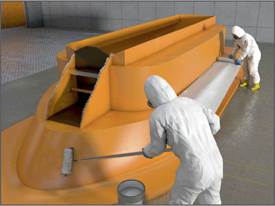

Gefährdungen
- Direkter Hautkontakt mit Gefahrstoffen sowie die bei den Arbeitsverfahren freiwerdenden Gefahrstoffe in Dampf-, Aerosol- und Staubform können zu Krebs-, Haut-, Atemwegserkrankungen und zu allergischen Reaktionen führen.
Schutzmaßnahmen
- Arbeitsverfahren und deren Reihenfolge schriftlich festlegen, wenn verschiedene Arbeiten an Bord ausgeführt werden.
- Koordinator bestimmen.
- Vor der probeweisen Inbetriebnahme
- notwendige besondere Sicherheitsmaßnahmen festlegen,
- Beschäftigte über die mit der Arbeit verbundenen Gefahren unterrichten,
- Gefahrbereiche kennzeichnen und gegebenfalls absperren,
- Rettungswege festlegen und kennzeichnen,
- Feuerlöscheinrichtungen vorhalten.
- Rettungsplan festlegen.
- Rettungs- und Fluchtwege unter Deck unbedingt freihalten.
- Arbeitsplätze unter Deck ausreichend beleuchten.
- Unter Deck für ständige Be- und Entlüftung sorgen.
- Stäube und lösemittelhaltige Dämpfe an der Entstehungsstelle absaugen. Bei explosionsgefährlichen Stäuben und Dämpfen ex-geschützte Geräte einsetzen. Explosionsgrenzen beachten.
- Atemschutz benutzen, wenn technische Maßnahmen zur Staubvermeidung nicht möglich sind.
- Bei Beschichtungsarbeiten der Außenhaut nur schadstofffreie Produkte verwenden.
- Beim Verarbeiten von Epoxid- und anderen Reaktionsharzen Schutzhandschuhe aus Nitril- oder Buthylkautschuk tragen, bei lösemittelhaltigen Produkten zusätzlich Atemschutz verwenden. Das Sicherheitsdatenblatt ist zu beachten.
Zusätzliche Hinweise für den Holz. B.otsbau
- Nur zugelassene schadstoffarme Leime verwenden.
- Bei Verarbeitung von Harthölzern Krebsgefährdung von Stäuben beachten.
Zusätzliche Hinweise für den Metall-Bootsbau
- Schweißrauche an der Entstehungsstelle absaugen.
- Erhöhte Gesundheitsgefährdung beim Schweißen von hoch legierten Stählen beachten.
- Gasansammlung unter Deck unbedingt vermeiden.
- Gasschläuche so verlegen, dass Beschädigungen ausgeschlossen sind. Kurze Verbindungen zwischen Gasflaschen und Brenner. Schlauchbruchsicherungen bzw. Leckgassicherungen einsetzen.
- Nach Beendigung der Arbeitsschicht sämtliche Gasanlagen von Bord nehmen.
- In Räumen/Bereichen mit leitfähiger Umgebung ortsveränderliche elektrische Betriebsmittel nur mit der Schutzmaßnahme
- Schutzkleinspannung oder
- Schutztrennung (mit einem oder mehreren Verbrauchern) oder
- Schutz durch Abschalten durch Fehlerstromschutzeinrichtung (RCD) mit IΔN ≤ 30 mA betreiben.
- Ortsveränderliche Stromquellen, Trenntrafos und Baustromverteiler grundsätzlich außerhalb des Raumes/Bereiches mit leitfähiger Umgebung aufstellen.
- In Räumen/Bereichen mit leitfähiger Umgebung und zusätzlich begrenzter Bewegungsfreiheit ortsveränderliche elektrische Betriebsmittel nur mit der Schutzmaßnahme
- Schutzkleinspannung (nur Betriebsmittel der Schutzklasse III anschließen) oder
- Schutztrennung (nur einen Verbraucher anschließen. Bei Betriebsmitteln der Schutzklasse I Potentialausgleich mit der leitfähigen Umgebung herstellen) betreiben.
Zusätzliche Hinweise für die Faserverbundtechnik
- Bei der Verarbeitung von Glasfasermatten und -gewebe Atemschutz benutzen.
- Hautkontakt beim Umgang mit Harzen und Härtern vermeiden (Allergiegefahr).
- Brandgefahr bei vorbeschleunigtem Material.
- Bei Verarbeitung von PU-Schaum nur FCKW-freie Schäume verwenden. Beim Abbund entstehende Amindämpfe direkt absaugen.
- Hautschutz beachten: Vor der Arbeit gezielter Hautschutz, nach der Arbeit richtige Hautreinigung, nach der Reinigung sorgsame Hautpflege.
Arbeitsmedizinische Vorsorge
- Arbeitsmedizinische Vorsorge nach Ergebnis der Gefährdungsbeurteilung veranlassen (Pflichtvorsorge) oder anbieten (Angebotsvorsorge. Hierzu Beratung durch den Betriebsarzt.
07/2021